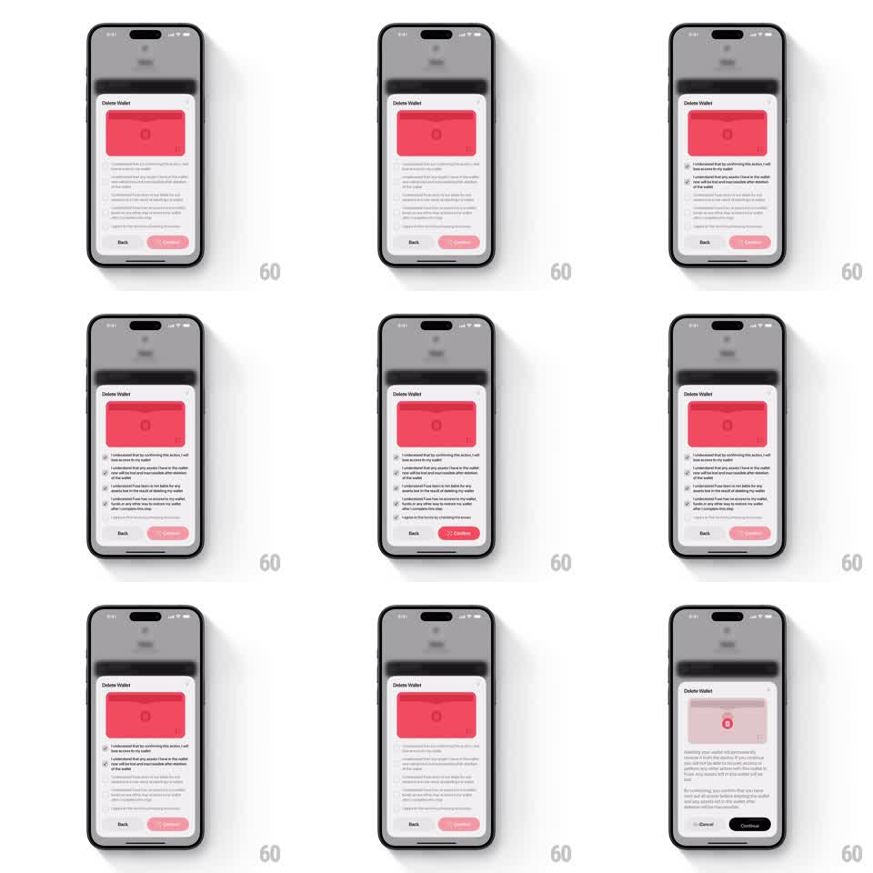

Media
Frame-by-frame

Rebuild this interaction 1:1: Fuse's delete-wallet confirmation - a bottom sheet with a red wallet card where the Continue button stays disabled until every consent checkbox in the scrolling warning list is ticked, then it arms in red.

Rebuild this interaction 1:1: Fuse's delete-wallet confirmation - a bottom sheet with a red wallet card where the Continue button stays disabled until every consent checkbox in the scrolling warning list is ticked, then it arms in red.
## Integration
Integration: stack-agnostic spec - springs given as stiffness/damping, timed motions as duration + curve; map every value to your framework and animation library of choice.
## Scene
Dimmed wallet screen with a "Delete Wallet" sheet: a red wallet card graphic, scrollable consent copy with checkboxes ("I understand that by confirming this action, I will lose access to my wallet", "I understand that any assets I have in the wallet will be lost and irretrievable after deletion of the wallet", "I understand that Fuse does not hold or have any access to my wallet...", "I agree to the terms by checking this box"), and a Back / Continue footer.
## Motion spec
Pattern: gated destructive confirmation, state-driven.
- Entry: the sheet slides up (350ms, ease-out) over the dimmed wallet (scrim fades to 60%, 300ms); the wallet card tilts in slightly (rotateX 8deg -> 0, 300ms).
- Check: tapping a row ticks its checkbox with a pop (scale 0.8 -> 1.15 -> 1, spring ~420/22, 200ms) and a 150ms haptic tick.
- Arm: when the last box ticks, Continue fills from grey-pink to solid red (250ms) with a subtle scale pulse (1 -> 1.03 -> 1); before that, taps on it shake the button (translateX +-6px, 2 cycles, 250ms).
- Confirm: tapping armed Continue fades the sheet content to a final state (250ms).
## Calibration
- The gating is per-checkbox: every listed consent must be checked, order-free.
- Disabled Continue is visibly muted (pink-grey), never hidden.
## Reduced motion
Sheet fades up (250ms); checkbox and button states switch without springs.
## Don't miss
- The consent list scrolls independently of the sheet; the footer stays pinned.
- The red wallet card at the top of the sheet is the thing being deleted - it stays in view as a reminder.